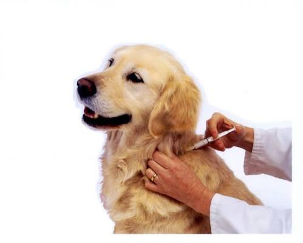
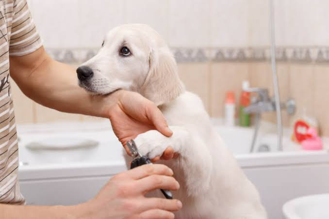

Novedades y Consejos Peludos
Mantente informado sobre el cuidado, salud y curiosidades de tus mascotas.

Importancia de la Vacunación Anual
Las vacunas previenen enfermedades mortales. Descubre qué esquema necesita tu perro o gato este año.

Beneficios del Baño y Corte Mensual
No es solo estética, mantener el pelaje limpio evita problemas en la piel y parásitos.
Chequeo Geriátrico para Mascotas Mayores
Si tu mascota tiene más de 7 años, los controles preventivos cada 6 meses son vitales.
Preguntas Frecuentes sobre Cuidado Animal
La desparasitación interna debe realizarse cada 3 a 4 meses, dependiendo del estilo de vida de tu mascota y si tiene acceso a parques o convive con otros animales. La desparasitación externa (pulgas y garrapatas) debe aplicarse según las indicaciones del producto (generalmente cada 1 a 3 meses).
Bajo ninguna circunstancia debes darle a tu mascota chocolate, cebolla, ajo, uvas, pasas o palta (aguacate). Estos alimentos contienen compuestos que su hígado no puede metabolizar, pudiendo causar fallas renales severas, anemia o problemas cardíacos graves.
Por norma general, se aconseja la esterilización alrededor de los 6 meses de edad (antes del primer celo en las hembras). Esto reduce en un 90% el riesgo de desarrollar tumores mamarios o infecciones uterinas, y en machos previene problemas de próstata y conductas de marcaje territorial.